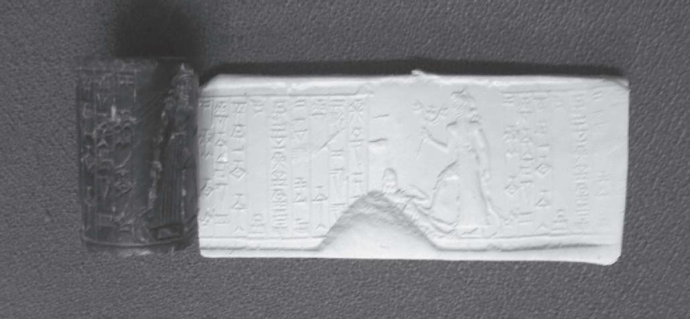
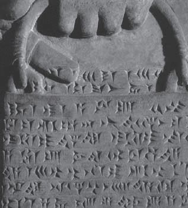
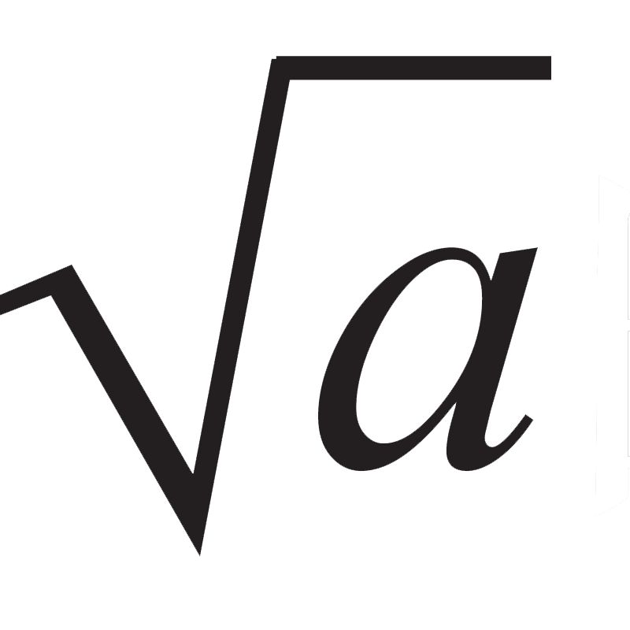
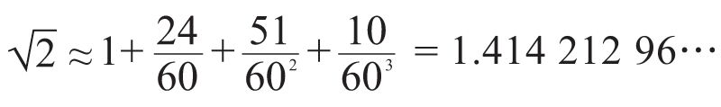
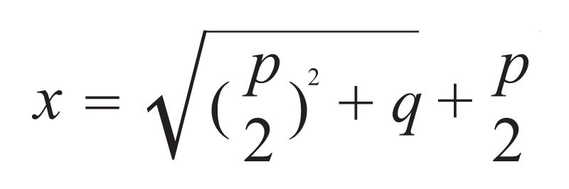
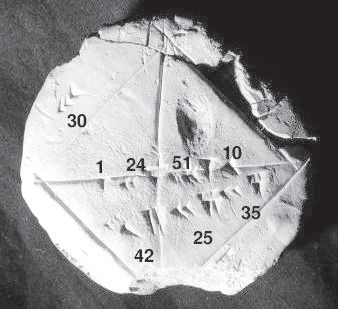
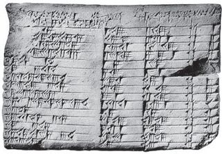

≈14.41421356…。
≈14.41421356…。尼罗河即使到入海处附近的埃及首都开罗，其水流依然是平缓的，可是流经巴格达的底格里斯河和与之比肩的幼发拉底河却汹涌湍急，正如居住在这块被称作美索不达米亚（今天的伊拉克，希腊文的含意为在河流之间）的土地上的人民所经历的诸多战乱一样（和平时期经济发展速度也快，是大型商队的必经之地）。自有历史记载以来，它先后被10多个外来民族所侵占，却一直维持着高度统一的文化，并曾经三次（苏美尔人、巴比伦尼亚和新巴比伦王国）达到人类文明的最高点。这其中，一种特殊的被称作楔形文字的使用至关重要，后者无疑是文化统一的黏合剂。
巴比伦尼亚位于美索不达米亚东南部，即巴格达周围向南直至波斯湾，巴比伦城是这一地区的首府，因此巴比伦尼亚又简称巴比伦。和埃及人一样，巴比伦人也居住在河流之滨，那里土地肥沃，易于灌溉，孕育出了灿烂的文明。除了创造楔形文字以外，还制定出最早的法典，建立城邦，发明陶轮、帆船、耕犁等。同时，他们还是锲而不舍的建筑师，通天塔和空中花园便是这种精神的产物。正如《大英百科全书》的编撰者所写的，巴比伦人的文学、音乐和建筑式样影响了整个西方文明。

苏美尔人的圆柱形印章。作者摄于巴格达
在计数方式上，巴比伦人更是别出心裁，他们采用了六十进制。有趣的是，巴比伦人只用了两个记号，即垂直向下的楔子和横卧向左的楔子，再通过排列组合，便可以表示所有的自然数。众所周知，巴比伦人还把一天分成24个小时，每个小时60分钟，每分钟60秒。这种计时方式后来传遍全世界，至今已沿用4000多年。
与埃及人在纸草书上书写的习惯不同，两河流域的居民用尖芦管在潮湿的软泥板上刻下楔形文字，然后将其晒干或烘干。这样制作而成的泥板文书比纸草书更易于保存，迄今已有50万块出土，成为我们了解古代巴比伦文明的主要文献和工具。只是，人们对楔形文字的释读比埃及象形文字要晚，大约在19世纪中期才完成。这有赖于一块叫贝希斯敦的石崖，它坐落在今天伊朗西部邻近伊拉克的城市巴赫塔兰郊外。
和罗塞塔石碑一样，贝希斯敦石崖上也用三种文字刻着同一篇铭文，分别是巴比伦文、古波斯文和埃兰文。其中埃兰是古波斯的一个国家，后来连同它的语言一起消亡了。破译石崖上的巴比伦文的是一个名叫罗林森（H.C.Rawlinson，1810—1895）的英国军官，他早年作为一名军校生被派往印度，在英国的东印度公司任职。23岁那年，罗林森与其他英国军官奉命赴伊朗整编伊朗国王的军队，由此对波斯古迹发生兴趣。他利用古波斯文的知识，释读了楔形文字书写的巴比伦语。
原来，贝希斯敦铭文讲的是波斯帝国最负盛名的统治者大流士一世如何杀死国王的继承人、击溃反对者夺得王位的故事。此事发生在公元前6世纪。大流士的国土横跨亚欧非三大洲，自然也把巴比伦置于波斯的版图之内。值得一提的是，按照“历史之父”希罗多德的说法，大流士是在得知他的军队在著名的马拉松战役中溃败的消息之后去世的，那是他对希腊发动的第一次进攻。不过，即便破译了巴比伦语，对泥板书中数学部分的释读也要等到20世纪三四十年代才有所突破。
在那50万块出土的泥板文书中，有300多块是数学文献。我们今天对于巴比伦人数学水平的了解，便是基于这些材料。如同前文所介绍的，巴比伦人创造了一套六十进制的楔形文字计数体系（用重复的短线或圆圈表示），并把小时和分钟划分成60个单位。与埃及人相比，巴比伦人的数字符号有所不同，一个数处于不同位置可以表示不同的值，这是一项了不起的成就。之后，他们甚至还把这个原理应用于整数以外的分数。这样一来，在处理分数时就不会像埃及人那样依赖单位分数了。

泥板文书上的楔形文字
比起埃及人来，巴比伦人更擅长算术。他们创造出许多成熟的算法，开方根就是其中的一例。这种方法简单有效，具体步骤如下：为求

的值，设a1 为其近似值，先求出b1 =a/a1 ，令a2 =（a1 +b1 ）；再求出b2 =a/a2 ，令a3 =（a2 +b2 ）/2，；继续下去，这个数值会越来越接近 ，并在其正确值附近振荡。例如，在由美国耶鲁大学收藏的一块泥板书（编号7289）里，将
用一个六十进制的小数表示：

这是相当精确的估计，因为正确的值为
≈14.41421356…。
巴比伦人在代数领域也取得了不错的成绩，而埃及人只能求解线性方程和像ax2 =b这类最简单的二次方程。也是在耶鲁大学收藏的一块泥板书里，巴比伦人给出了二次方程x2 －px－q=0的求根公式：


古巴比伦人计算出的值，精确到小数点后5位
由于正系数二次方程没有正根，因此除了上述方程，泥板书也给出了另外两种类型的二次方程的正确求解程序。这与16世纪法国数学家韦达发明的根与系数关系式如出一辙，只不过韦达考虑的是更一般的情形，即方程ax2 +bx+c=0。因此，我们不妨称其为“巴比伦公式”。而对于x3 =a或x3 +x2 =a这类特殊的三次方程，巴比伦人虽然没有办法求得一般的解法，但却绘制出相应的表格（前者即立方根表）。
可是，在几何学方面，巴比伦人的成就并没有超越埃及人。例如，他们对四边形的面积估算与埃及人的计算公式一致，十分粗糙。至于圆的面积，他们通常认定其值为半径平方的三倍，相当于取圆周率为3，其精确度尚不及埃及人。不过，有证据表明，巴比伦人懂得用相似性的概念来求线段的长度。对于希罗多德所称赞的莫斯科纸草书中“最伟大的金字塔”，巴比伦人也能推导出类似的公式。
有一些泥板文书上的问题说明巴比伦人对数学除了抱有实用目的以外，还有理论上的兴趣，这一点是埃及人难以企及的。这在一块叫“普林顿322号”的泥板书上有很好的体现，这块泥板书的来历已经无法考证，只知道曾被一个叫普林顿的人收藏过。322是他个人给予这块泥板的收藏编号，它现存于纽约哥伦比亚大学图书馆。其实，普林顿322号是一块更大的泥板文书的右半部分，因为其左边是断裂的，且留有胶水的痕迹，这说明缺损部分是在出土后丢失的。
普林顿322号板的面积很小，长度和宽度分别只有12.7厘米和8.8厘米。它上面的文字是古巴比伦语，因此它的年代至晚是在公元前1600年。实际上，这块泥板上只刻着一张表格，由4列15行六十进制的数字组成。因此，在相当长的时间内，它被人们误认作一张商业账目表而未受重视。直到1945年，时任美国《数学评论》编辑的诺伊格鲍尔（O.Neugebauer，1899—1990）发现了普林顿322号的数论意义，才激起了人们对它的极大兴趣。

普林顿322号
诺伊格鲍尔的研究表明，普林顿322号与毕达哥拉斯数组有关。所谓毕达哥拉斯数组，是指满足
a2 +b2 =c2
的任何正整数数组（a，b，c），它在古代中国也被称为整勾股数，最小的一组是（3，4，5）。从几何学意义上讲，每一组毕达哥拉斯数皆构成某个整数边长的直角三角形（又称毕达哥拉斯三角形）的三条边长。诺伊格鲍尔发现，第2、3列的相应数字，恰好构成毕达哥拉斯三角形的斜边c和一条直角边b。其中只有4处例外，诺伊格鲍尔认为那可能是笔误，并做了纠正。
例如，这张表的第1、5和11行分别是数组（1，59；2，49），（1，5；1，37），（45；1，15），转化成十进制就是（120，119，169），（72，65，97），（60，45，75）。每组中的第一个数是计算后得出来的另一条直角边a，它们恰好是整数。在补全空缺数字后，诺伊格鲍尔发现，第4列（第1列是序号）的数字是s=（a/c）2 ，也就是说，s是b边所对应的角的正割的平方。若设b边的对角为B，则
s=csc2 B
普林顿322号第4列实际上给出的是，一张从31°到45°的正割函数平方表（以约1°的间隔）。
大约1000年以后希腊人才知道，互素的毕达哥拉斯数（a，b，c）可由下列参数公式导出，即
a=2uv，b=u2 –v2 ，c=u2 +v2
其中u>v，u、v互素且一奇一偶。可是，巴比伦人是如何计算出这些数字的，这无疑是一个谜。
诺伊格鲍尔天才的发现，提升了巴比伦人的数学成就。因此，我想在这里介绍一下这位奥地利人。诺伊格鲍尔于19世纪的最后一年出生，自小父母双亡，由叔叔抚养成人。18岁那年，为了逃避毕业考试，他入伍当了炮兵。“一战”结束时，他在意大利的俘虏营里与同胞哲学家维特根斯坦成为狱友。战后，他辗转于奥地利和德国的几所大学，学习物理学和数学，最后在哥廷根大学攻读数学史，毕业后先后执教于布朗大学和普林斯顿大学。诺伊格鲍尔精通古埃及文和巴比伦文，他是德国和美国两家《数学评论》的创始人。